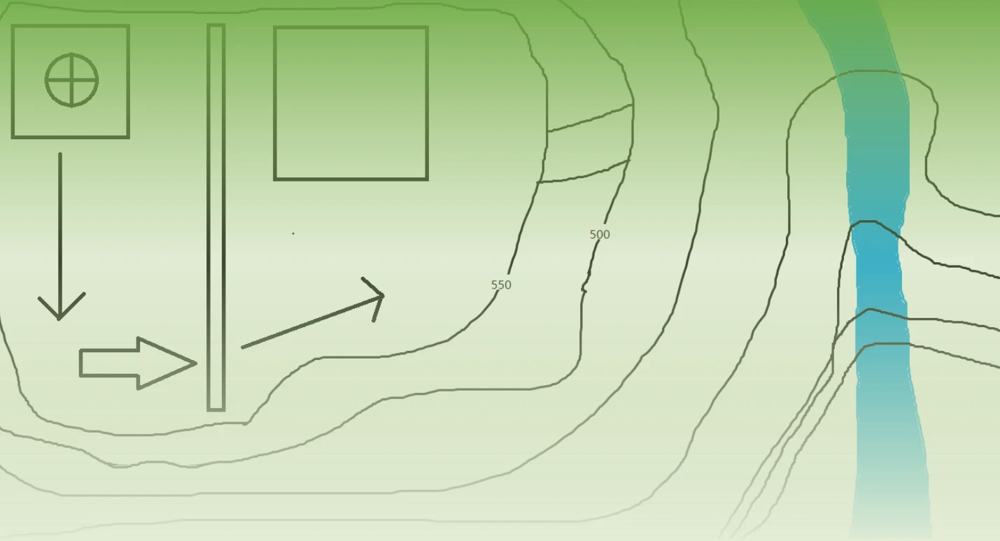
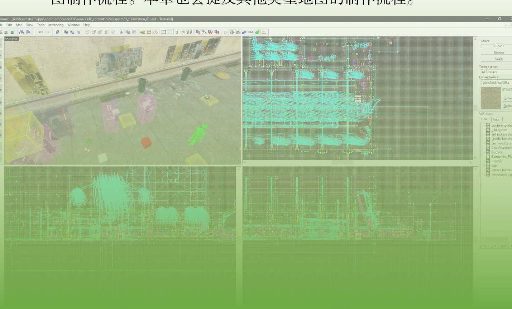
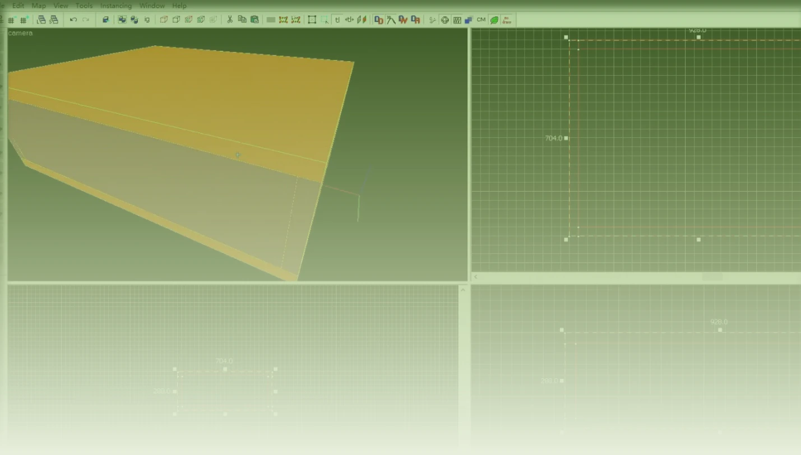
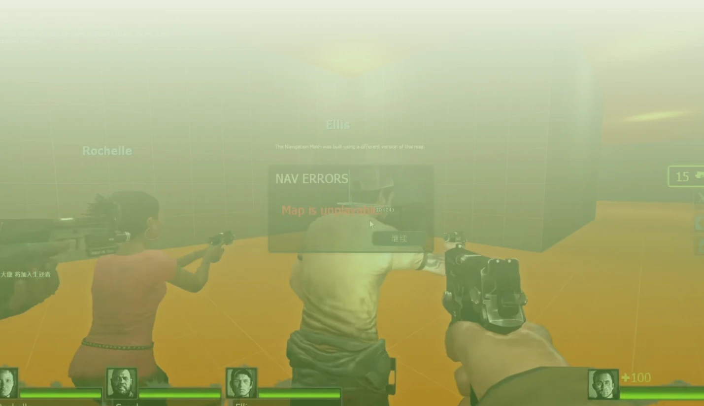

在本章中我们要了解整个地图制作的大致流程，一个地图是怎样产生的。地图首先通过设计，与自己的想法结合，并试图实现。本章主要以标准求生之路战役为标准，来展开介绍地图制作流程。本章也会提及其他类型地图的制作流程。
2.1 地图制作前#
在地图制作前，你需要先知道你要做什么样的地图。否则，你就会漫无目的地进行地图制作，毫无计划，以至于难以制作地图，甚至无法开始地图制作。
2.1.1 战役地图#
一个战役地图（Campaign Maps），是指在战役模式下运行，通过多人合作、团队配合、探索道路、防守怪物进攻等，达成过关的目标的地图。战役地图是适用范围最广泛的地图类型。
战役地图基于战役模式。战役模式（Cooperative Mode），又称合作模式，要求由玩家们扮演的生还者齐心协力突破重重困难，对抗由计算机控制的感染者大军，到达救援点而逃生。
战役地图设定在丧尸末日的背景下幸存者四人出于何种目的而来到此处地方，并最终去到一个救援地点而逃生。所以你需要先构思好剧情。
你需要先设计剧情的开端。剧情的开端有多种方式，一般来说是弃车、坠机。
之后你需要大概知道要经过的地点（路线），以及目的地。比如The DISTINCTIVE Map 2中剧情是：
幸存者来到停车场寻找CEDA，发现CEDA已经撤离了。他们需要寻找新的救援点，发现最近的救援点在城市中的医院。于是他们从停车场逃出来，然后因为公路被封锁了只能通过森林穿越到城市。通过森林时发现了一个通往下水道的房屋，沿着下水道走却被引入了一个调查研究机构被研究，完成各种测试（伦理问题）。然后生还者通过一个被撞开的口从实验室逃了出去，回到了下水道，沿着下水道来到了城市，寻找救援点（医院）。最后在医院屋顶获救。
在上例中，剧情简要定义了战役需要经过的地点，以及场景，最后是目的地。这个剧情适用于标准的战役，你需要根据你的战役类型来确定剧情，然后你才能知道如何设计你的地图。
- 1.战役分类
战役地图可以分为包括但不限于以下几种：
- （1）标准战役地图（仿官图）
标准战役地图，有相对充裕的补给品、适中的怪物和防守、合理的长度，能做出不错的平衡性，在各方面都不错，是大多数玩家喜好的战役地图。
官方地图是最典型的。第三方地图有《再见了，晨茗》（Farewell Chenming）a、《回到学校》（Back to School）、《嗜血蜃楼》（Diescraper Redux）、《死亡假期》（Dead Vacation）、《生还之锋》（Front of Survivors）、《遗忘之地》（Land of Oblivion）等。
标准战役地图可能还会有其他类型的内容。
- （2）创意地图
此类地图与机关图类似，但是其更像标准的战役地图。创意地图是在标准战役地图的基础上添加了许多的玩法，让地图更有趣味，并且这些玩法不会很难懂，玩家很容易上手。
典型的地图有《不可企及》（Unattainable）、《音讯全无》（No Echo）等。
- （3）风景地图
风景图是一类以优秀的风景而著称的战役地图。其风景、地图细节、场景布置等都是比较优秀的，地图优化程度较好，能够拥有较高的帧率，适合观赏，一般情况下没有复杂的机关设计，难度偏低或适中，可以轻松地通关。部分风景图可能难度会稍微偏高一些，具有一定的挑战性。
典型的地图有《广州增城》a、《闪电突袭2》（Suicide Blitz 2）、《活死人黎明》（Dead Before Dawn DC）、《再见了，晨茗》（Farewell Chenming）、《摩耶山危机》（Yama）、《故乡》等。
- （4）机关、解密地图、玩法地图
机关图以精巧的机关设计而著名。其地图内含有大量的机关、玩法，需要玩家去理解、破解，才能达成通关目标。解密地图则更需要玩家深思熟虑，才能发现通关的方法。这类地图难度普遍偏高。
除了比较难的机关图以外，部分地图在标准战役地图的基础上有增加一些新玩法，增加了地图的趣味性，比如《不可企及》《音讯全无》等。
典型的地图有《伦理问题》（Questionable Ethics）及其系列地图b、《军事工厂2》（Military Industrial Complex II）、《魂斗罗》（ContraZ）等。
- （5）复刻、移植地图
这类地图是通过把其他（起源）游戏中的地图复刻或移植到求生之路之中，并加以修改，使之符合求生之路的运作形式的一类地图。典型的地图有《白森林》（White Forest）、《半条命2》（Half-Life 2）、《异度神兆》（Divine Cybermancy）等。
除此之外，复刻地图也可能是把小说、电视电影中的情节做成求生之路战役。
- （6）官改地图
这类战役地图在官方地图的基础上，修改或新增一些内容而形成，比如修改路线、更改环境氛围、装饰等。典型的地图有暴雨系列地图c、《死亡中心：圣诞节版本》（Dead Center - Christmas Edition）、《毫不留情返程版》等。
- （7）坑图
坑图是一类不同于一般的战役地图的地图。坑图是以大量的高难度内容，试图让玩家无法通关为目的的一类战役地图，比如通过大量刷新Tank、尸潮，使玩家难以抵抗，从而最终导致玩家无法通关。坑图中会出现各种奇怪的丧尸生成方式，比如直接在玩家面前刷新一个Tank，是非自然生成；坑图中也会出现各种奇怪的地形，使玩家难以通过，比如跑酷（能够让玩家站立的空间可能非常小，使得玩家难以跳到平台上）。坑图的风景、地图细节通常比较简陋，内容主要在于坑害玩家的机关上。所以坑图有别于其他类型的地图。某些机关图太难也可能会被认为是坑图。
部分坑图做的比较优秀，相比于一般的坑图，有比较多的玩法创新，同时能吸引玩家的兴趣，而不是单纯地坑害玩家，比如《忧郁》系列（Glubtastic）。
典型的地图有《hehe》系列、《忧郁》系列、《洞穴之旅》（Cave Tour）系列、《Somefun》等。
以上分类还可以作为一种标签，这样便能更准确地描述一个战役地图所包含的内容。
- 2.难度
战役地图也还可以按难度分类。以星级为难度指标，5颗星为最高等级（★、★★、★★★、★★★★、★★★★★），星级越高，难度越大。一些标准战役地图做得很好，同时难度也很高，这样地图就比较耐打，而不会乏味。「★★★」为适中难度。坑图、机关图绝大部分为四星或五星，标准战役地图、风景图及其他类型的战役地图不固定。
- 3.确定战役类型、定义剧情后
接下来，设计好地图的基本结构，根据剧情分章节，开始划分地图基本内容。一般而言，一个章节是一个设计图，这个设计图能够简要表述剧情中定义的路线及地形、建筑。之后你需要按照设计图把它实现于游戏之中。
以下为设计战役地图时的一些建议：
- （1）地图规模
你自己需要先确定地图的规模。这个规模应该是你意料之中的，比如地图大概包含多少个章节、每一个章节包含的内容有多少。
- （2）主题
制作地图时需要围绕主题。比如你是机关、解密图，就需要专心于各种机关的设计，知道怎样的玩法更好。地图需要能吸引玩家的兴趣，使玩家玩了之后不会感觉到无聊，而是有趣、快乐。这就需要多种多样的场景和机关设计，以及与场景的互动。
- （3）添加事件
添加一些突发事件可以使玩家有更好的游戏体验。比如战斗机轰炸、直升机坠毁、响起的警报器，甚至是假救援……你可以把想到的列举出来，从中挑选一些你认为比较好的想法，并将其实现于游戏中。
2.1.2 对抗地图#
谈到对抗地图就不得不说一下对抗模式。
对抗模式（Versus Mode）是求生之路系列中的基本竞争游戏模式。它是分别由2支有至多4名玩家的队伍分别扮演生还者和特殊感染者进行的非对称性对抗，在此模式下进行的地图称作对抗地图（Versus Maps）。
对抗模式基于战役模式修改而来，战役模式里只允许玩家扮演生还者，而在对抗模式里玩家还可以扮演特殊感染者。对抗模式使用生还者的里程来决定这支队伍的得分数，即生还者越接近终点（即终点安全屋或救援点），得分越多。
对抗地图相比于战役地图，在各方面都需要考虑平衡性。平衡性不好的对抗地图，会使得玩家几乎毫无游戏体验，一方玩家总是能压倒另一方玩家。标准战役地图本身具有比较好的平衡性，所以进行了适当的修改之后可以成为对抗地图。平衡性是对抗地图的重要指标。
制作对抗地图的建议（烈锋a语）：
- 1.本身也是对抗玩家的，不亲自参与是很难有较好的平衡性设计的。
- 2.有一定的地图设计基础，这里推荐700小时Hammer以上。
- 3.能够频繁的修改、更新关卡问题，快速迭代。
- 4.有众多的玩家反馈群体，最好还有个对抗图作者前辈愿意提建议。
好的对抗地图通常满足以下条件：
- 1.全路程接坦克局。任意路段都有能接Tank的场地。
- 2.补给合理。药物出现的位置明显，子弹安排的时机恰好。
- 3.长度适中，每关都不会让人认为过长或者过短，并且最好是4-6关。
- 4.帧数优化较好。在对局中不会让帧数成为障碍。
2.1.3 多模式、非战役地图#
如果你的地图支持多个模式，比如同时支持战役、生还者模式，你需要根据每种模式在地图中对其进行动态调整，或者为每个模式制作专门的地图。
或者，你的地图只是生还者模式地图等，你需要遵循模式标准来制作地图。
一些地图可能完全不是一般类型的地图，比如《男生女生向前冲》是一张跑酷类型的地图。
本书将在后面分别介绍每个模式的制作要求。
2.2 地图制作中#
在知道要制作的内容后，接下来就需要去将其实现到游戏之中。根据你的设计图，你应该能够知道其中的细节，比如墙高多少、墙厚多少、地形怎样。你应该能够在脑海中能想象出你预期的地图。
其中，有些内容是需要根据实际情况而调整的。也许你自己不能实现某些效果，则可以向他人求助，学习更多知识，或者放弃这个想法（实在是没办法的情况下）。你还要根据游戏的性能来优化地图，使地图运行起来流畅。
总之，在地图制作过程中会遇到各种各样的问题，而你需要去面对它们，并积极寻找解决方案，最好就是询问他人，尤其是有经验的作者。你可以去寻找著名的地图作者，向他们寻求帮助。以下是在地图制作中时的一些建议：
- 1.要经常保存和备份
这是非常重要的！你的Hammer时不时就会崩溃，所以要经常保存工程文件，否则会损失大量成果！这是前人总结的。除此之外，在制作导航网格时也要经常保存导航工程文件，因为在制作导航时游戏容易崩溃！
即使是使用Hammer++也要经常保存。不管是制作地图，还是使用其他软件，都要经常保存！
备份也是非常重要的。万一做出了不可逆的更改，造成了永久性的损坏，那么备份可以在一定程度上避免。尤其是在某些情况下，你的硬盘可能会损坏，或者由于某些原因无法访问自己的存储设备，那么把文件备份到多个位置也是必要的，比如备份到云存储空间。
此外，在你制作地图时可能会出现一些错误，并且如果无法修复，那么备份就可以解决这个问题。
备份间隔时间不宜太长。
- 2.要保持进度，制定计划
你应该制定时间表，控制自己作图的时间，这样能使你不必过度劳累。你应该知道本次作图要达到什么目标，要完成制作什么内容。同时，也要督促自己去作图。但作图只是业余的，不要把它当成正业（特殊情况例外）。两次作图时间间隔不宜太长，使你能连贯的制作地图。
以上只是建议，不代表你一定要这么做。因为作图是随心所欲的，且大部分作者都是用爱发电。
2.3 地图制作后#
在完成地图的制作后，你需要进行测试。地图测试是最重要的。地图测试可以寻找、发现地图的问题所在，测试地图的游戏功能，检查地图的各项指标是否达标。
你可以提前打包，叫上几个人一起对地图进行测试，测试地图的表现。你不妨去寻求他们的感受及意见，以帮助你改进地图。
测试之前，你需要对地图打包。而打包之前需要制作地图的海报，每个关卡的缩略图，以及编写mission文件，还要将你使用的自定义纹理和模型一起打包。之后需要制作addonimage.jpg和addoninfo.txt来描述你这个自定义附件。你可以一边制作地图，一边进行地图的发布工作。完成了这些工作之后，你需要将整个地图打包成一个文件（.vpk）。这是地图打包的一般流程。
完成地图测试后，你就可以发布了！你可以分享你的vpk文件给你的朋友，上传到地图网站上（例如Gamemaps），或者发布于创意工坊等公开网络平台。
而在地图发布之后，根据玩家的反馈，你还需要对地图进行后续修改。《广州增城》作者在发布地图之后与玩家保持高度联络，及时地对玩家的反馈做出针对性修改。在数月的不断完善后，《广州增城》在国际上也享有极高的地位。
那么恭喜你，完成了地图的制作。
习题2#
选择题
- 1.在制作战役地图之前，制作者首先需要确定什么？
A. 游戏难度 B. 救援点的位置 C. 地图的类型和剧情 D. 玩家数量
- 2.以下哪种地图是以精巧的机关设计著称的？ A. 风景地图 B. 创意地图 C. 机关地图 D. 标准战役地图
- 3.以下哪项不是标准战役地图的一般特征？ A. 充足的补给品 B. 适中的怪物数量 C. 长度较短 D. 平衡的游戏体验
- 4.复刻地图的主要特点是什么？ A. 提供高难度的挑战 B. 从其他游戏移植过来并加以修改 C. 以风景优美著称 D. 增加了新的游戏机制
- 5.以下哪个工具用于测试和检测地图的泄露问题？ A. VPK工具 B. Hammer编辑器 C. VVIS D. VBSP
- 6.在对抗模式下，得分的依据是什么？ A. 击杀的敌人数量 B. 生还者的行进距离 C. 生还者的健康值 D. 完成的关卡数量
- 7.下列哪种地图是以高难度和故意为难玩家为特点的？ A. 创意地图 B. 风景地图 C. 坑图 D. 标准战役地图
- 8.在发布地图之前，以下哪项工作是必不可少的？ A. 添加额外的关卡 B. 制作地图的海报和缩略图 C. 增加自定义武器 D. 增加额外的游戏模式
- 9.哪类地图设计主要侧重于优化场景的细节和帧数？ A. 标准战役地图 B. 风景地图 C. 创意地图 D. 坑图
- 10.在地图设计中，哪些事件可以提升玩家的游戏体验？ A. 减少敌人数量 B. 添加突发事件（如战斗机轰炸或警报器响起） C. 减少地图规模 D. 增加跳跃和跑酷内容
- 11.在地图的制作过程中，制作者应该如何避免数据丢失？ A. 将地图文件备份到多个位置 B. 每次制作后立即发布地图 C. 使用更高配置的硬件 D. 减少地图的复杂性
- 12.以下哪种模式最需要通过调整地图平衡性来确保游戏体验？ A. 合作模式 B. 对抗模式 C. 生还者模式 D. 跑酷模式
- 13.在地图制作中，哪种类型的地图通常有更高的帧数优化要求？
A. 创意地图 B. 坑图 C. 风景地图 D. 对抗地图
- 14.在地图的最终发布阶段，地图文件通常打包为哪种格式？ A. .bsp B. .vpk C. .vmf D. .mdl
- 15.制作对抗地图时，哪个设计因素至关重要？ A. 复杂的几何设计 B. 游戏的平衡性 C. 增加突发事件 D. 提高图像质量
- 16.地图制作完成后，最重要的步骤是什么？ A. 增加新的实体 B. 对地图进行全面测试 C. 发布地图 D. 修改地图的光源
- 17.标准战役地图的核心结构是什么？ A. 从一个点出发，经过场景，到达救援点 B. 随机生成的关卡和敌人 C. 以任务为导向的线性游戏设计 D. 没有固定的结构
第3章 你的第一个求生之路地图#




原书脚注
- 原书第 15 页 a 国产经典图。由Missed制作、嘻哈冲锋协助制作。Missed是国内早期的一批地图作者之一，可谓是国产图的开山鼻祖。此图是国产图的典范。此外，Missed也制作了《随机序列》（Random Sequence）、《魂斗罗Z》（ContraZ）等。
- 原书第 16 页 a 由永恒M守护和MLUI制作。这是影响力相当大的地图之一，给国产风景图造就了佳话，再次提高了国产风景图的天花板。
- 原书第 16 页 b包括《伦理问题》、《伦理问题：阿尔法测试》（Questionable Ethics: Alpha Test）（又称「伦理问题2」）和《伦理问题：联合》（Questionable Ethics: Combine）（又称「伦理问题3」）。
- 原书第 16 页 c即把全部官方地图的天气修改为暴雨天气，比如《死亡中心暴雨版》（Dead Center Storm Mode）、《毫不留情暴雨版》（No Mercy Storm Mode）等。由HerobrineAce［中国求生之路地图作者，《再见了，南宁》（Goodbye, Nanning）的作者］制作。
- 原书第 17 页 a烈锋，又名「Garry锋锋」、「锋锋」，中国求生之路地图作者，求生之路2战役《生还之锋》（Front of Survivors）的作者，
- 原书第 18 页 也是战役《音讯全无》对抗版本的主要制作者。